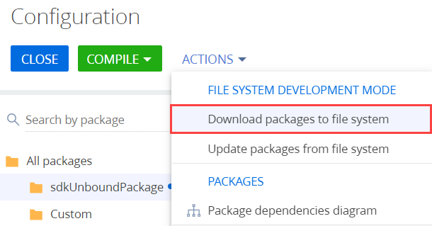

Creatio предоставляет различные инструменты поставок функциональности.
Инструменты управления поставками, которые предоставляет Creatio:
- Creatio IDE.
- Утилита WorskspaceConsole.
В этой статье будет рассмотрено управление поставками с использованием утилиты WorkspaceConsole.
WorkspaceConsole — это утилита, которая предназначена для выполнения операций с пакетами и схемами конфигурационных элементов Creatio.
Использование утилиты WorkspaceConsole в качестве инструмента переноса решений позволяет:
- Переносить пакеты и схемы конфигурационных элементов между рабочими средами и конфигурациями.
- Устанавливать новые пакеты при обновлении или при экспорте из среды разработки.
- Переносить привязанные к пакету данные, например, наполнение справочников, новые системные настройки, демонстрационные записи раздела и т. д.
- Переносить ресурсы для локализации.
- Создавать и переносить рабочие пространства между рабочими средами.
Перед использованием утилиты WorkspaceConsole необходимо выполнить ее настройку.
Настройка утилиты WorkspaceConsole
-
Узнайте значение используемой строки подключения.
Для этого откройте файл ..\Terrasoft.WebApp\DesktopBin\WorkspaceConsole\Terrasoft.Tools.WorkspaceConsole.exe.config. Строка подключения содержится в атрибуте connectionStringName XML-элемента <db>.
-
Отредактируйте строку подключения.
Для этого откройте файл ConnectionStrings.config, который находится в корневом каталоге приложения. Строка подключения содержится в атрибуте name XML-элемента <connectionStrings>. Значение атрибута name файла ConnectionStrings.config должно совпадать со значением атрибута connectionStringName файла Terrasoft.Tools.WorkspaceConsole.exe.config.
Если с помощью WorkspaceConsole необходимо выполнить разовую операцию, то утилиту можно запустить с параметром
-webApplicationPath . В этом параметре необходимо указать путь к каталогу с установленным приложением. В таком случае утилита самостоятельно определит все необходимые параметры подключения к базе данных из файла ConnectionStrings.config. При этом параметры подключения из файла Terrasoft.Tools.WorkspaceConsole.exe.config будут проигнорированы. -
В файле Terrasoft.Tools.WorkspaceConsole.exe.config установите значение true для атрибута enabled элемента loadFromRemoteSources.
-
Установите утилиту WorkspaceConsole.
Для этого с правами администратора запустите на выполнение предустановленный пакетный файл команд, который находится по пути ..\Terrasoft.WebApp\DesktopBin\WorkspaceConsole\. Это необходимо для установки версии исполняемого файла утилиты и библиотек, которые используются утилитой.
Пакетные файлы команд утилиты WorkspaceConsole:
- Для 32-битной операционной системы необходимо запустить файл PrepareWorkspaceConsole.x86.bat.
- Для 64-битной операционной системы необходимо запустить файл PrepareWorkspaceConsole.x64.bat.
-
Настройте утилиту на выполнение операций с хранилищем SVN (опционально).
Для этого скопируйте файлы SharpPlink-x64.svnExe, SharpSvn.dll и SharpSvn-DB44-20-x64.svnDll из соответствующего каталога в каталог ...\Terrasoft.WebApp\DesktopBin\WorkspaceConsole.
- Для 32-битной операционной системы скопируйте файлы из каталога ...\Terrasoft.WebApp\DesktopBin\WorkspaceConsole\x86.
- Для 64-битной операционной системы скопируйте файлы из каталога ...\Terrasoft.WebApp\DesktopBin\WorkspaceConsole\x64.
Использование утилиты WorkspaceConsole
Исполняемый файл утилиты Terrasoft.Tools.WorkspaceConsole.exe расположен в каталоге ..\Terrasoft.WebApp\DesktopBin\WorkspaceConsole, а версия утилиты совпадает с версией приложения.
Утилита WorkspaceConsole работает напрямую с базой данных приложения. Поэтому для корректной работы утилиты необходимо внести информацию о базе данных в конфигурационный файл Terrasoft.Tools.WorkspaceConsole.exe.config утилиты. Если приложение развернуто в облаке, то работать с утилитой могут только сотрудники отдела облачных сервисов. В таком случае для переноса изменений необходимо обратиться в службу поддержки.
Команды для WorkspaceConsole рекомендуется формировать в пакетном файле (*.bat или *.cmd), созданном в текстовом редакторе.
Чтобы выполнить перенос решений с помощью утилиты WorkspaceConsole:
- Проверьте привязки данных.
- Выполните резервное копирование базы данных.
- Экспортируйте пакеты.
- Импортируйте пакеты.
- Перезапустите приложение в IIS.
1. Проверить привязки данных
Перед экспортом пакета проверьте правильность привязки данных к пакету. К привязанным данным относятся наполнение справочников, новые системные настройки, демонстрационные записи раздела и т. д.
Если раздел был создан при помощи мастера, то данные, необходимые для работы раздела, автоматически привязываются мастером раздела. Чтобы после импорта раздел отобразился в рабочем месте, необходимо привязать соответствующее значение объекта SysModuleInWorkplace.
2. Выполнить резервное копирование базы данных
Перед внесением изменений в приложение с помощью утилиты WorkspaceConsole выполните резервное копирование базы данных. Это позволит восстановить приложение при некорректном использовании команд и параметров утилиты.
3. Экспортировать пакеты
Утилита WorkspaceConsole позволяет экспортировать пакет из базы данных или из хранилища SVN.
Экспортировать пакеты из базы данных
-
Cформируйте команду для экспорта пакетов.
Параметры WorkspaceConsole для экспорта пакетов из базы данныхПараметр Значение Описание -operation SaveDBContent Сохраняет содержимое базы данных в файловую систему. Тип содержимого определяется значением параметра
-contentTypes . Место в файловой системе, куда будет экспортировано содержимое, определяется параметром-destinationPath .Требует указания одного из параметров
-webApplicationPath или-configurationPath .-contentTypes Repository Тип содержимого, экспортируемого из базы данных на диск. Значение Repository определяет экспорт рабочего пространства, имя которого задается значением параметра -workspaceName , в каталог, путь к которому задается значением параметра-destinationPath .-workspaceName Название рабочего пространства Название рабочего пространства (конфигурации), в котором выполняется операция. По умолчанию все пользователи работают в рабочем пространстве Default. -destinationPath Путь к локальному каталогу Путь к локальному каталогу на диске. В этот каталог будут экспортированы *.gz-архивы пакетов. -webApplicationPath Путь к локальному каталогу Путь к каталогу на диске, в который установлено приложение Creatio. По этому пути из файла ConnectionStrings.config будет считана информация по соединению с базой данных. Если параметр не указан, то будет установлено соединение с базой данных, указанной в строке соединения в конфигурационном файле утилиты. -configurationPath Путь к локальному каталогу Путь к каталогу ..\Terrasoft.WebApp\ Terrasoft.Configuration. В этот каталог экспортируются исходные коды и ресурсы схем пользовательских пакетов в режиме разработки в файловой системе. Сигнатура команды, которую необходимо выполнить в интерпретаторе команд (консоли) Windows, для выполнения операции экспорта пакетов из базы данных:
- Запустите утилиту.
В результате выполнения архивы пакетов указанного рабочего пространства будут экспортированы в локальный каталог.
Экспортировать пакеты из хранилища SVN
-
Cформируйте команду для экспорта пакетов.
Параметры WorkspaceConsole для экспорта пакетов из SVNПараметр Значение Описание -operation SaveVersionSvnContent Выгружает иерархию пакетов в виде *.zip-архивов. Место в файловой системе, куда будет экспортировано содержимое, определяется параметром -destinationPath . SVN-хранилища определяются параметром-sourcePath .-workspaceName Название рабочего пространства Название рабочего пространства (конфигурации), в котором выполняется операция. По умолчанию все пользователи работают в рабочем пространстве Default. -destinationPath Путь к локальному каталогу Путь к локальному каталогу на диске. В этот каталог будут экспортированы *.gz-архивы пакетов. -workingCopyPath Путь к локальному каталогу Локальный каталог для рабочей копии пакетов, которые хранятся в SVN. -sourcePath Путь к SVN-хранилищу Адрес хранилища SVN для хранения структуры и метаданных пакетов. Может принимать несколько значений, указанных через запятую. -packageName Имя пакета Имя пакета в SVN-хранилище, которое будет использоваться для экспорта. Все пакеты, от которых зависит текущий пакет, также будут задействованы. -packageVersion Версия пакета Версия пакета в SVN-хранилище, которое будет использоваться для экспорта. -sourceControlLogin Имя пользователя SVN Логин пользователя хранилища SVN. -sourceControlPassword Пароль пользователя SVN Пароль пользователя хранилища SVN. -cultureName Языковая культура Код языковой культуры. Например, en-US. -excludeDependentPackages true или false Признак необходимости экспорта пакетов, от которых зависит пакет, указанный в параметре -packageName .-logPath Путь к локальному каталогу Путь к каталогу, в который будет сохранен файл с логом операции. Название файла состоит из даты и времени запуска операции. Необязательный параметр. Сигнатура команды, которую необходимо выполнить в интерпретаторе команд (консоли) Windows, для выполнения операции экспорта пакетов из SVN-хранилища:
- Запустите утилиту.
В результате выполнения архивы пакетов указанного рабочего пространства будут экспортированы в локальный каталог.
4. Импортировать пакеты
-
Cформируйте команду для импорта пакетов.
Параметры WorkspaceConsole для импорта пакетов в базу данныхПараметр Значение Описание -operation InstallFromRepository Импортирует в конфигурацию содержимое и метаданные пакетов из *.zip-архивов. При необходимости выполняются привязанные SQL-скрипты, перегенерация исходных кодов, установка привязанных данных. Работает только с измененными или новыми пакетами и их элементами. Требует указания одного из параметров
-webApplicationPath или-configurationPath .Требует указания параметра
-confRuntimeParentDirectory .-packageName Имя пакета Имя пакета в конфигурации, которая указана в параметре -workspaceName . Все пакеты, от которых зависит текущий пакет, также будут задействованы. Если параметр не указан, то будут задействованы все пакеты конфигурации.-workspaceName Название рабочего пространства Название рабочего пространства (конфигурации), в котором выполняется операция. По умолчанию все пользователи работают в рабочем пространстве Default. -sourcePath Путь к локальному каталогу Путь к локальному каталогу на диске. В этом каталоге находятся *.gz-архивы пакетов, которые необходимо установить. -destinationPath Путь к локальному каталогу Путь к локальному каталогу на диске. В этот каталог будут экспортированы *.gz-архивы пакетов, которые определены в параметре -sourcePath .-skipConstraints false Пропустить создание внешних ключей в таблицах базы данных. Принимает значения true или false. -skipValidateActions true Пропустить проверку возможности создания индексов таблиц при обновлении структуры базы данных. Принимает значения true или false. -regenerateSchemaSources true Указывает на необходимость перегенерации исходных кодов после сохранения пакетов в базе данных. Принимает значения true или false. По умолчанию — true. -updateDBStructure true Указывает на необходимость обновления структуры базы данных после сохранения пакетов. Принимает значения true или false. По умолчанию — true. -updateSystemDBStructure true Указывает на необходимость изменения структуры базы данных системных схем перед выполнением установки пакетов. Также создает все отсутствующие индексы в системных таблицах. Принимает значения true или false. -installPackageSqlScript true Указывает на необходимость выполнения SQL скриптов до и после сохранения пакетов. Принимает значения true или false. По умолчанию — true. -installPackageData true Указывает на необходимость установки привязанных к пакету данных после сохранения пакетов. Принимает значения true или false. По умолчанию — true. -continueIfError true Указывает на необходимость прервать выполнение процесса установки при получении первой ошибки. Если значение параметра — true, то процесс установки пройдет до конца, а пользователь получит список всех возникших ошибок. Принимает значения true или false. По умолчанию — false. -webApplicationPath Путь к локальному каталогу Путь к каталогу на диске, в который установлено приложение Creatio. По этому пути из файла ConnectionStrings.config будет считана информация по соединению с базой данных. Если параметр не указан, то будет установлено соединение с базой данных, указанной в строке соединения в конфигурационном файле утилиты. -confRuntimeParentDirectory Путь к локальному каталогу Путь к родительскому каталогу директории ..\Terrasoft.WebApp\conf. -logPath Путь к локальному каталогу Путь к каталогу, в который будет сохранен файл с логом операции. Название файла состоит из даты и времени запуска операции. Необязательный параметр. -configurationPath Путь к локальному каталогу Путь к каталогу ..\Terrasoft.WebApp\ Terrasoft.Configuration. В этот каталог экспортируются исходные коды и ресурсы схем пользовательских пакетов в режиме разработки в файловой системе. Сигнатура команды, которую необходимо выполнить в интерпретаторе команд (консоли) Windows, для выполнения операции импорта пакетов в базу данных:
- Запустите утилиту.
-
Cформируйте команду для генерации статического контента в файловую систему.
Параметры WorkspaceConsole для компиляции конфигурацииПараметр Значение Описание -operation BuildConfiguration Выполняет генерацию статического контента в файловую систему.
Требует указания одного из параметров
-webApplicationPath или-configurationPath .-workspaceName Название рабочего пространства Название рабочего пространства (конфигурации), в котором определены экспортируемые пакеты. По умолчанию все пользователи работают в рабочем пространстве Default. -destinationPath Путь к локальному каталогу Путь к локальному каталогу на диске. В этот каталог будут экспортированы *.gz-архивы пакетов, которые определены в параметре -sourcePath .-webApplicationPath Путь к локальному каталогу Путь к каталогу на диске, в который установлено приложение Creatio. По этому пути из файла ConnectionStrings.config будет считана информация по соединению с базой данных. Если параметр не указан, то будет установлено соединение с базой данных, указанной в строке соединения в конфигурационном файле утилиты. -confRuntimeParentDirectory Путь к локальному каталогу Путь к родительскому каталогу директории ..\Terrasoft.WebApp\conf. -logPath Путь к локальному каталогу Путь к каталогу, в который будет сохранен файл с логом операции. Название файла состоит из даты и времени запуска операции. Необязательный параметр. -force true или false Задает условия генерации файлового контента. Если значение параметра равно true, то генерация файлового контента выполняется по всем схемам. Если значение параметра равно false, то генерация файлового контента выполняется по измененным схемам. По умолчанию — false.
Требует указания одного из параметров
-webApplicationPath или-configurationPath .-configurationPath Путь к локальному каталогу Путь к каталогу ..\Terrasoft.WebApp\ Terrasoft.Configuration. В этот каталог экспортируются исходные коды и ресурсы схем пользовательских пакетов в режиме разработки в файловой системе. Сигнатура команды, которую необходимо выполнить в интерпретаторе команд (консоли) Windows, для выполнения операции генерации статического контента в файловую систему:
- Запустите утилиту.
Не рекомендуется использовать утилиту WorkspaceConsole для импорта пакетов в базу данных при включенном режиме разработки в файловой системе. Если утилита будет использована, то исходный код измененных схем будет изменен в базе данных, но останется без изменений в файловой системе. Т. е. при открытии схемы конфигурационного элемента в Creatio IDE отобразится неизмененный код из файловой системы. При этом дата модификации схемы конфигурационного элемента будет обновлена. Это приводит к ложному ощущению, что перенос схемы прошел корректно.
Чтобы импортировать пакеты в базу данных при включенном режиме разработки в файловой системе:
- Воспользуйтесь инструкцией и импортируйте пакеты в базу данных с помощью утилиты WorkspaceConsole.
- На панели инструментов в группе действий Разработка в файловой системе (File system development mode) выберите Выгрузить все пакеты в файловую систему (Download packages to file system).

В результате все пакеты будут выгружены по пути ..\Terrasoft.WebApp\Terrasoft.Configuration\Pkg в каталог с соответствующим названием пакета.
5. Перезапустить приложение в IIS
Для применения изменений перезапустите приложение в IIS. Это необходимо, поскольку утилита WorkspaceConsole вносит изменения напрямую в базу данных.